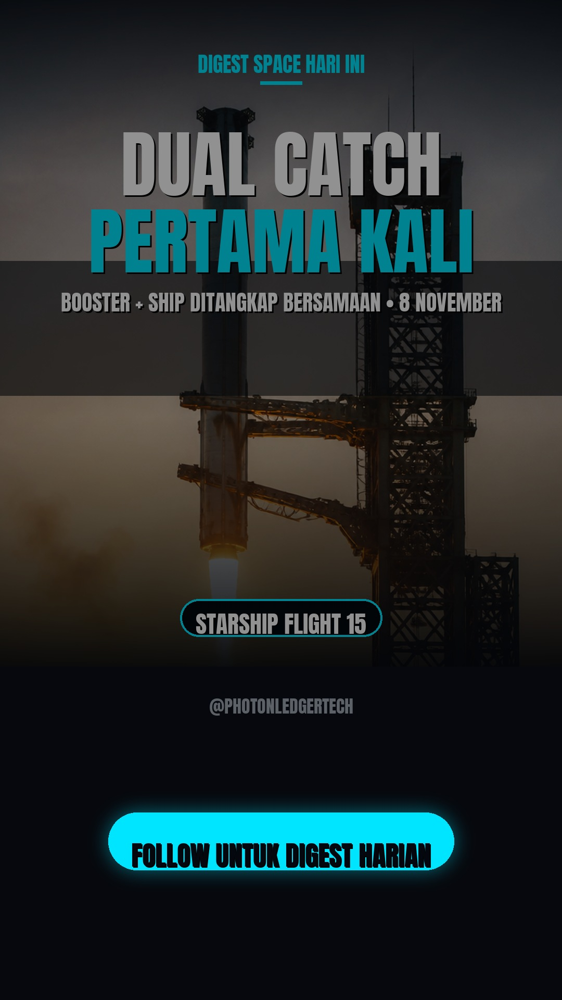

parameter) dengan context window 1 juta token, unggul di coding 3D (Blender/Unreal/Unity) dan turun 65% hallucination finansial; weights terbuka 4 November 2026. Sumber: Kimi.ai via futuretools.io, https://futuretools.io/news
parameter yang diklaim kuat di cybersecurity, coding, manufaktur, dan tugas multimodal. Sumber: aiapphunters.com, https://aiapphunters.com/news
waktu finalitas transaksi dari ~12,8 detik menjadi target 150 milidetik — lompatan besar untuk kecepatan jaringan, meski harga SOL masih tertekan oleh sentimen makro/geopolitik. Sumber: Cointelegraph, https://cointelegraph.com/
minyak Brent ke level tertinggi sejak Maret; arus keluar ETF Ethereum sudah lewat $1 miliar sepanjang Oktober. Sumber: Cointelegraph, https://cointelegraph.com/
menggunakan roket Falcon 9 booster B1063 yang sudah terbang 36 kali — termasuk misi DART NASA 2021; ini peluncuran Falcon 9 ke-116 SpaceX tahun ini. Sumber: Space.com, https://www.space.com/space-exploration/launches-spacecraft/spacex-falcon-9-starlink-group-15-15-b1063-ocisly
gas peaker di 43 pasar global, sementara antrean pemasangan turbin menumpuk lebih dari $162 miliar (22 Okt). Sumber: RenewaNews, https://renewanews.com/
milik Ørsted, meski sebelumnya sempat melonggarkan sikap terhadap proyek energi terbarukan demi dukungan RUU perizinan. Sumber: Financial Times, https://www.ft.com/renewable-energy
pgrade Alpenglow di Solana mainnet yang memangkas finalitas transaksi ke ~150ms — katalis teknikal besar untuk jaringan yang jadi fokus trading Kafa, meski harga masih tertekan sentimen makro.